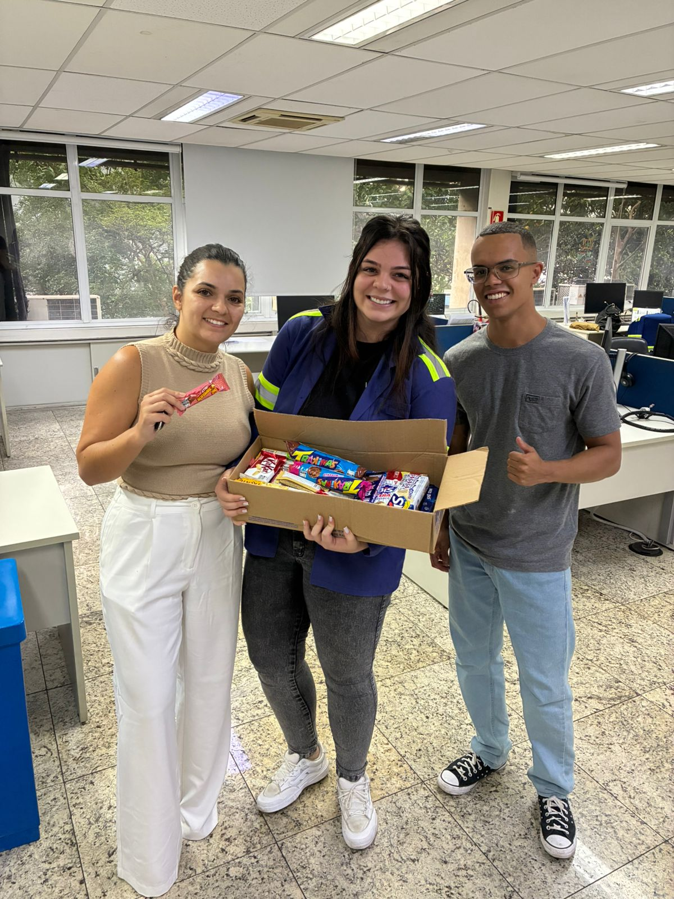
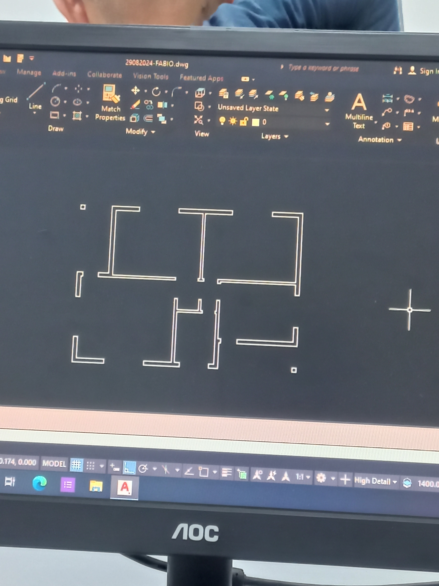

Além de prestar serviços à comunidade, experiência que moldou minha visão acerca do trabalho, durante o Serviço Militar Obrigatório, eu criei, por iniciativa própria, o perfil do Instagram do Tiro de Guerra de Santo André (minha cidade natal).
Para visualizar o perfil, basta clicar aqui.
Ao final do período em que servi, recebi o Honra ao Mérito, condecoração concedida aos soldados que se destacaram por sua excelência.

Antes do meu retorno à FEI, eu trabalhei na unidade Gerdau, de Pirituba, como Analista de Projetos. Como podemos ver na imagem a seguir, esse dia eu e minha equipe ganhamos um prêmio de produtividade:

Para conhecer mais sobre a empresa, veja Gerdau – Sobre Nós
Atualmente estudo na FEI, em São Bernardo do Campo.
No técnico em edificações, adquiri proficiência em AUTOCAD 2D e AUTOCAD 3D. Abaixo, o processo de construção de uma planta 2D durante o curso, porém, já trabalhei e tive contato com projetos de maior complexidade.

O meu hobbie favorito é a pratica de exercícios físicos, gosto de mesclar o treinamento com o peso corporal e musculação tradicional.
Gosto muito de cinema, um dos meus filmes favoritos é V de Vingança.
Ademais, para informações adicionais mais detalhadas, acesse meu perfil no LinkedIn.